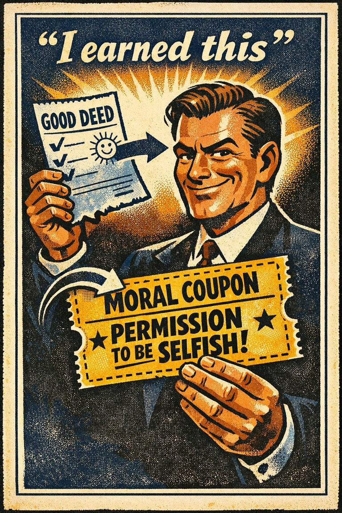

Common in people judgment
90
Especially active in hiring, leadership judgment, and public image evaluation.
Rare
Frequent

Cognitive Biases
A practical cognitive-bias site with clear definitions, learning paths, assessments, self-audits, and debiasing tools.
Cognitive Bias
The tendency for one salient positive or negative impression to spill over into unrelated judgments about a person, product, or institution.
What it distorts
It makes broad evaluations look evidence-based when they are often driven by one glowing or tainted feature.
Typical trigger
Charisma, prestige, beauty, eloquence, and one highly visible success or failure.
First countermove
Score the relevant traits separately before giving any overall rating.
Coverage depth
Quick reset
Which one favorable trait or impression is leaking into judgments it has not actually earned?
The mind likes coherence. Once something feels admirable, attractive, competent, or impressive, neighboring traits are inferred too easily.
These are classroom-facing editorial estimates for comparing how the bias behaves in use. They are teaching aids, not measured statistics.
Common in people judgment
90
Especially active in hiring, leadership judgment, and public image evaluation.
Easy to spot from outside
48
Often visible only after the rating dimensions are separated.
Easy to innocently commit
87
Coherence feels efficient, so one good signal easily expands into a whole character read.
Teaching difficulty
42
Easy to show, harder to eliminate in live social judgment.
This comparison makes the hidden pull easier to see before the technical label has to do all the work.
Biased move
This is like deciding a whole restaurant is excellent because the front window was beautifully designed.
Clearer comparison
A polished signal can be real and still fail to license the larger verdict. Good evaluation keeps traits separated long enough to see which ones actually transfer.
Do not use halo effect for every positive impression. The issue is not that one strong trait exists. The issue is that the strong trait is being allowed to color unrelated judgments too quickly.
Use this label when attractiveness, charisma, prestige, or one visible strength starts inflating judgments about competence, honesty, or overall worth beyond the evidence for those specific dimensions.
Use the quick check, caveat, and nearby confusions together. The fastest diagnosis is often the noisiest one.
Each example changes the surface context while keeping the same hidden distortion in place.
A charismatic speaker is assumed to be well-informed in domains that were never actually demonstrated.
A top performer in one visible area gets rated as strong across unrelated competencies without separate evidence.
A celebrity, founder, or institution receives trust on complex claims because one admired trait spills across the rest of the judgment.
One good or bad impression makes the rest of the object feel as if it has already been explained.
Teaching note: The halo effect is often the easiest path into explaining why hiring, grading, and media trust can all drift in parallel.
The strongest debiasing moves change the process, not just the label.
Score the relevant dimensions separately before writing an overall judgment.
Use structured rubrics that prevent one glowing trait from settling every category.
Blind irrelevant prestige cues where possible in screening, review, and evaluation.
Practice And Repair
Halo effect compresses evaluation. Instead of holding several traits apart long enough to inspect them, one strong positive cue starts acting like a general-purpose credential.
A person presents one especially favorable cue such as beauty, warmth, eloquence, prestige, or early competence in a visible domain.
Because the first cue feels coherent and attractive, adjacent judgments start to inherit its glow without each one being separately tested.
Trait ratings that should have remained independent become fused into a broad positive verdict.
Separate the dimensions on paper and force each one to cite its own evidence before you average them into an overall impression.
What evidence supports this specific trait judgment apart from the first favorable cue I noticed?
Spot It
Slow It
Reframe It
These distinction guides slow down the most common nearby-label confusions before the diagnosis hardens.
The halo effect lets one positive impression spill into unrelated judgments; fundamental attribution error overreads behavior as character while underreading situation.
Quick rule: Ask whether one admired trait is spilling outward, or whether a behavior is being turned into a trait explanation too quickly.
These are nearby labels that can share the same outer appearance while differing in what actually drives the distortion. Use the overlap, the distinction, and the diagnostic question together before settling the call.
Why compare it: Fundamental attribution error explains behavior through character too quickly; halo effect lets one impression wash over many later judgments.
Why compare it: Implicit bias can shape who gets the halo or horn in the first place; halo effect describes the spillover once the first impression exists.
Why compare it: Confirmation bias later protects the first impression; halo effect is the initial cross-contamination of evaluation.
These are useful when the label seems roughly right but the process change still feels underspecified.
Which separate trait am I actually trying to rate here?
What evidence supports that trait specifically rather than my whole impression?
If the same content came from a less prestigious source, would I score it the same way?
These sourced cases do not prove what was in someone's head with perfect certainty. They are teaching cases for showing where the bias pressure becomes visible in practice.
Thorndike's military rating studies
Officers who were rated strongly on one dimension were often rated strongly across many others, even when the dimensions should not have moved together so tightly.
Why it fits: A single favorable impression was spilling across trait boundaries instead of staying local to the evidence that earned it.
Wikipedia · 1920
Attractiveness spills into competence judgments
Research tied to halo effect repeatedly shows that visual attractiveness can inflate judgments about unrelated traits such as intelligence, warmth, or credibility.
Why it fits: One socially potent cue begins licensing a much wider verdict than it deserves.
Wikipedia · Modern social psychology
Use these sources to move from the teaching page into the underlying literature and seed reference material. The site is still written for clarity first, but the stronger pages should also be traceable.
Thorndike's original paper naming the halo effect and showing cross-trait spillover in ratings.
Seed taxonomy and broad coverage are drawn from Wikipedia's List of cognitive biases, then editorially reshaped into a teaching-first reference.
Once you know the bias, these nearby tools help you use the page in a real workflow rather than as a static definition.
Curated sequences where this bias commonly appears alongside a few predictable neighbors.
Short audits you can run before the distortion hardens into a decision, a verdict, or a post-hoc story.
Bias-aware AI prompts that widen the frame instead of simply endorsing the first preferred conclusion.
A mixed scenario set that can quietly pull this bias into the question bank without announcing the answer in the title first.
These links widen the frame around the bias without interrupting the core lesson on this page.
An article on how repeated exposure, possession, and group identity can all make an option feel more worthy before explicit reasons have earned the difference.
CogBias theory
An article on why halo effect, attribution errors, implicit bias, and related distortions tend to compound rather than appear in isolation.
CogBias theory
These neighbors were selected from shared categories, shared patterns, and explicit editorial links where available.

The tendency to explain other people's behavior too quickly in terms of character while underweighting situational pressures and constraints.

The tendency to notice, seek, and remember evidence that supports the story you already prefer more readily than evidence that threatens it.

The tendency to give bad news, threats, criticism, and losses more psychological weight than equally sized positives.

The tendency to give excess weight to the opinion of a high-status or authoritative source independent of whether the source has earned that weight on the specific issue.

The tendency to like, trust, or feel more comfortable with something simply because it has become familiar.

Effect: Occurs when someone who does something good gives themselves permission to be less good in the future.